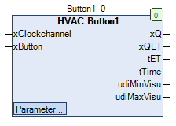

Button1 (FB)¶
FUNCTION_BLOCK Button1
Kurzbeschreibung¶
Schaltelement mit Zeitprogramm und Taste
Darstellung¶

Schnittstellen¶
Eingänge¶
Name Datentyp Wertebereich Initialwert Funktion xClockchannel BOOL Eingang-Zeitprogramm xButton BOOL Eingang-Bedientaste
Ausgänge¶
Name Datentyp Wertebereich Initialwert Funktion xQ BOOL Freigabe-Ausgang xQET BOOL Anzeige Nutzzeitverlängerung ist aktiv tET TIME Restlaufzeit-Nutzzeitverlängerung tTime TIME Skalierte Anzeige dvon udiTime udiMinVisu UDINT Anzeige von tMinTime für die Visualisierung udiMaxVisu UDINT Anzeige von tMaxTime für die Visualisierung
Sollwerte / Parameter¶
Name Datentyp Wertebereich Initialwert Funktion eManModeB eMANBIN eMANBIN.Auto, eMANBIN.ManOff, eMANBIN.ManOn eMANBIN.Auto Betriebsart der Handübersteuerung für den digitalen Ausgang xQ xButtonVisu BOOL FALSE Funktion wie xButton xEnClockButton BOOL FALSE Option ‘Freigabe der Bedientaste bei aktivem Eingang-Zeitprogramm’ xEnToggle BOOL TRUE Option ‘Sperrung-Wechsel Betriebsart’ udiTime UDINT 120 Zeiteingabe (absolute Grenzen: 0..7 Tage) je nach Skalierung eTimeScale eTime eTime.Minute Festlegung der Skalierung der Zeiteingabe (Sekunden, Minuten, Stunden) tMinTime TIME T#0m Untergrenze für die Zeiteingabe udiTime tMaxTime TIME T#120m Obergrenze für die Zeiteingabe udiTime
Funktionsbeschreibung¶
Allgemeines¶
Der Funktionsbaustein dient grundsätzlich zur Festlegung der Betriebsarten Nachtbetrieb ( xQ = FALSE ) und Tagbetrieb ( xQ = TRUE )
in Abhängigkeit von den Zuständen an den Eingängen Zeitprogramm ( xClockchannel ) und Bedientaste ( xButton und/oder xButtonVisu ).
Das Betriebsverhalten wird dabei durch insgesamt zwei einstellbare Optionen beeinflusst.
In der Basis-Konfiguration ( Einstellung der Optionen siehe unten ) sind die grundlegenden Funktionen verfügbar.
Freigabe-Ausgang xQ¶
Der Freigabe-Ausgang xQ zeigt stets den aktuellen Zustand des Schaltelements in Abhängigkeit von den Eingängen und den beiden Optionen an.
Anzeige-Nutzzeitverlängerung xQET¶
Der Anzeige-Ausgang xQET zeigt stets den aktiven Zustand der Nutzzeitverlängerung an.
Restlaufzeit-Nutzzeitverlängerung tET¶
Der Anzeige-Ausgang tET zeigt stets die aktuelle Restlaufzeit einer aktiven Nutzzeitverlängerung an.
Direkt nach dem ersten Download und vor dem ersten Start des Timers wird stets der Wert T#0s angezeigt.
Option tEnClockButton¶
Mit dieser Option wird die Taste während des aktiven Zeitprogramms gesperrt oder freigegeben.
Ist der Sollwert / Parameter tEnClockButton TRUE, dann kann mit den Tasten (xButton und/oder xButtonVisu) bei aktiviertem Eingang xClockchannel, der Ausgang xQ aus- und eingeschaltet werden.
Option tEnToggle¶
Ist der Sollwert / Parameter tEnToggle TRUE, dann kann im Nachtbetrieb mit den Tasten (xButton und/oder xButtonVisu) die Nutzzeitverlängerung ein- und ausgeschaltet werden. Ansonsten ist nur ein Starten der Nutzzeitverlängerung möglich.
Skalierung / Anzeige der Zeitdauer udiTime¶
Der Anzeige-Ausgang tTime zeigt permanent den aktuellen Wert des Sollwerts / Parameters udiTime in skalierter Form ( eTimeScale )
und absolut begrenzt durch tMinTime bzw. tMaxTime an.
Anzeige der Zeituntergrenze udiMinVisu¶
Der Anzeige-Ausgang udiMinVisu zeigt permanent den aktuellen Wert des Sollwerts / Parameters tMinTime in skalierter Form ( eTimeScale )
und absolut begrenzt durch tMinTime bzw. tMaxTime an.
Anzeige der Zeituntergrenze udiMaxVisu¶
Der Anzeige-Ausgang udiMaxVisu zeigt permanent den aktuellen Wert des Sollwerts / Parameters tMaxTime in skalierter Form ( eTimeScale )
und absolut begrenzt durch tMinTime bzw. tMaxTime an.
Visualisierung¶
Codesys¶
- InOut:
Scope Name Type Initial Comment Input xClockchannel BOOL Eingang-Zeitprogramm xButton BOOL Eingang-Bedientaste Output xQ BOOL Freigabe-Ausgang xQET BOOL Anzeige Nutzzeitverlängerung ist aktiv tET TIME Restlaufzeit-Nutzzeitverlängerung tTime TIME Skalierte Anzeige dvon udiTime udiMinVisu UDINT Anzeige von tMinTime für die Visualisierung udiMaxVisu UDINT Anzeige von tMaxTime für die Visualisierung Input tMaxTime TIME TIME#120m0s0ms Obergrenze für die Zeiteingabe udiTime tMinTime TIME TIME#0ms Untergrenze für die Zeiteingabe udiTime eTimeScale eTime eTime.Minute Festlegung der Skalierung der Zeiteingabe (Sekunden, Minuten, Stunden) udiTime UDINT 120 Zeiteingabe (absolute Grenzen: 0..7 Tage) je nach Skalierung xEnToggle BOOL TRUE Option ‘Sperrung-Wechsel Betriebsart’ xEnClockButton BOOL FALSE Option ‘Freigabe der Bedientaste bei aktivem Eingang- Zeitprogramm’ xButtonVisu BOOL FALSE Funktion wie xButton eManModeB eManBin eMANBIN.Auto Betriebsart der Handübersteuerung für den digitalen Ausgang xQ